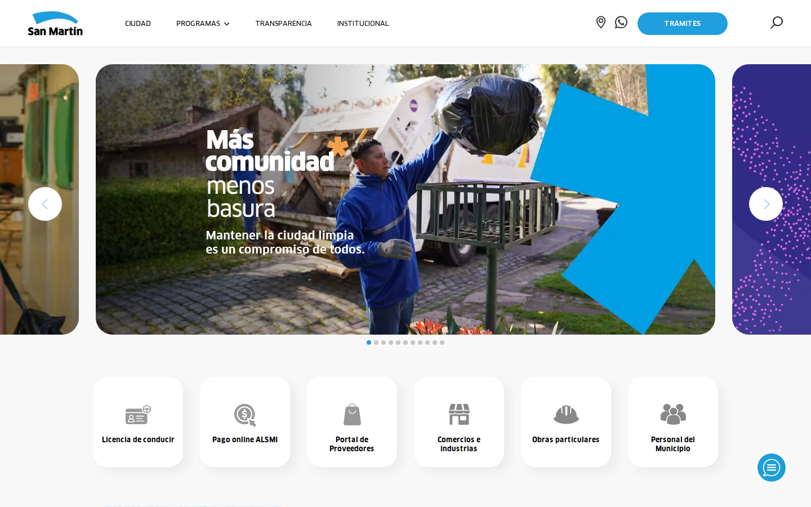
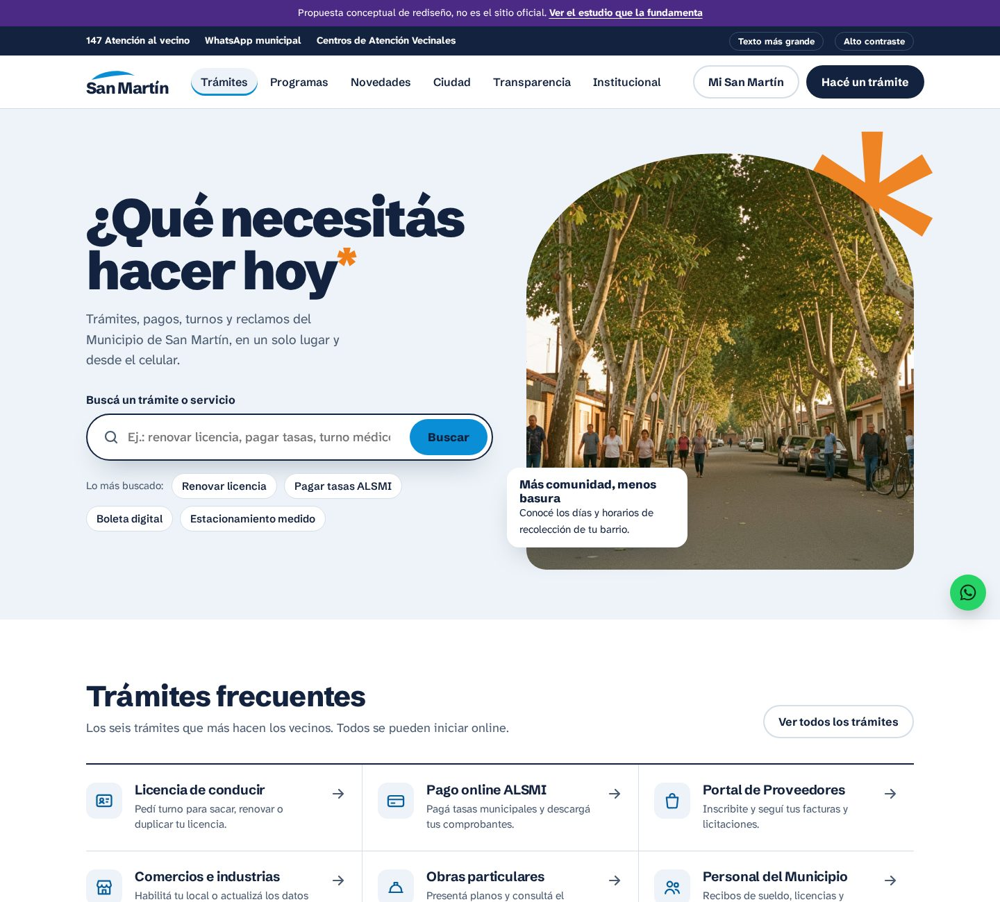
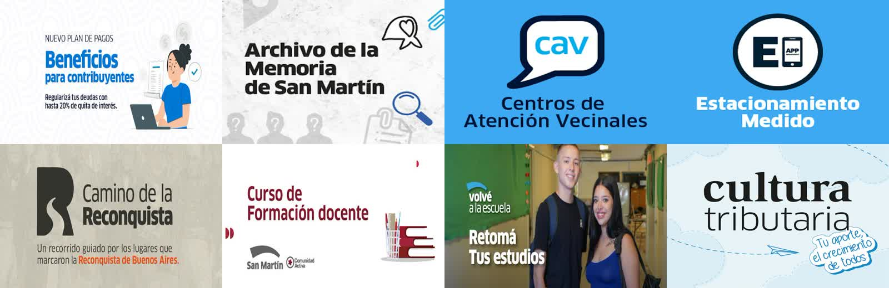

Diagnóstico de sanmartin.gob.ar, qué hacen los mejores sitios de gobierno en 2026 y una propuesta de página de inicio con el estándar de un proyecto de US$ 10 mil.


La marca es buena (arco azul, asterisco naranja de la campaña “Más comunidad*”), el contenido existe. El problema es la arquitectura: el sitio está organizado como una vitrina de comunicación, no como un mostrador de servicios.

Referencias: GOV.UK (estándar mundial), Colorado (Best Government Site 2026 en WebAward), Los Angeles, Denver, Utah, NYC, Chattanooga y Mississippi.
La ciudadanía llega con una pregunta, no para navegar. Buscador grande, en el centro de la primera pantalla.
Utah, Denver, LA, OregonOrganizar por “qué quiero hacer” y “quién soy”, no por el organigrama.
Colorado, Chattanooga, TulareSolo los recorridos principales; el resto queda para la búsqueda y las subpáginas. Carga rápido y cansa menos.
NYC, Los AngelesWCAG 2.2 AA: contraste 4,5:1, foco visible, teclado, texto real (no en imagen), fuente grande.
GOV.UK, Washington D.C.Pensado para quien paga una tasa a las 23h desde el celular con el 20% de batería.
Shadow Digital, 2026Fotos reales de personas y barrios; tipografía como herramienta de navegación, no de decoración.
Mississippi, Brevard, Saint PaulNo cambia la marca, la eleva. El arco del logo se convierte en el recorte entre las secciones (como la ola del Helsinki Design System) y en el marco de las fotos; el asterisco naranja de la campaña aparece solo en dos lugares. Una familia tipográfica, casi ningún borde, mucho espacio.
Cielo#0A8FD6 marca, búsqueda, campaña
Texto del cielo#0667A8 enlaces y categorías
Tinta#0E1B33 texto y bloques
Tinta 2#516074 texto secundario
Niebla#F3F6F9 fondos suaves
Naranja#F07F1A asterisco y foco
Grotesca abierta y humana, legible en tamaño pequeño y con peso de cartel en el 800. Sustituye a FF Clan (de pago) sin perder el tono de la marca.
Título del hero, títulos de sección, elementos de lista y texto corrido (base de 18px, interlineado 1,6).
Rango típico de una agencia para un sitio institucional de gobierno local, con CMS. Estimación de referencia, no es un presupuesto.
| Etapa | Entrega | Parcela |
|---|---|---|
| Descubrimiento | Análisis de búsquedas/analítica, entrevistas con vecinos, mapa de las 20 tareas más realizadas | US$ 1.200 |
| Arquitectura y contenido | Nueva navegación por tarea, reescritura de las páginas de trámites en lenguaje claro | US$ 1.800 |
| Design system | Tokens, componentes, página de inicio + 6 modelos de página, prototipo navegable | US$ 2.500 |
| Desarrollo | Front-end accesible sobre el CMS actual (Prismic), búsqueda con sinónimos | US$ 3.500 |
| Accesibilidad y lanzamiento | Auditoría WCAG 2.2 AA, pruebas con lector de pantalla, rendimiento, capacitación del equipo | US$ 1.000 |